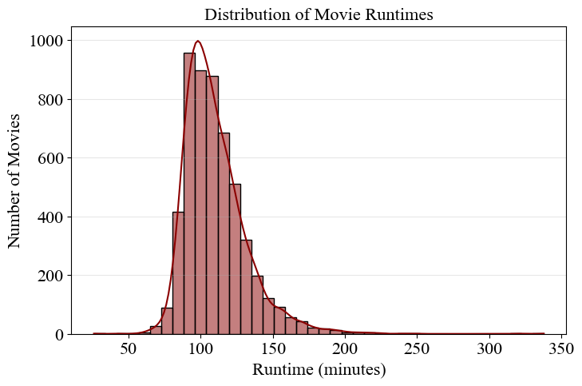
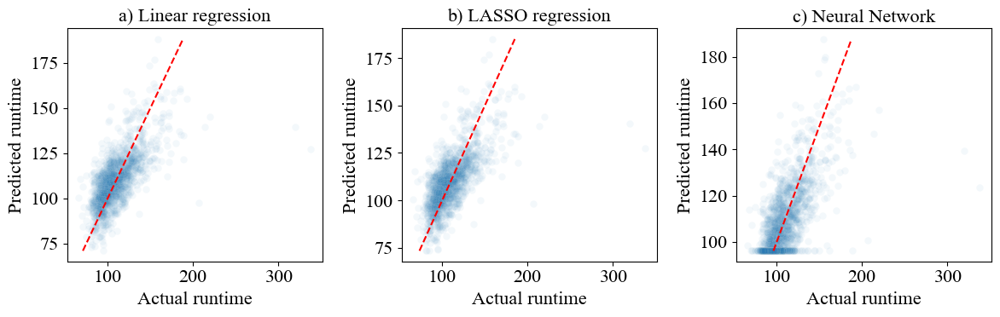

La durée d'un film est un facteur clé de sa production et de sa distribution, influençant directement la programmation des salles de cinéma et l'engagement du public. L'objectif de ce projet est de prédire la durée d'un film (une variable continue) en se basant sur ses métadonnées techniques et économiques : le budget, les revenus, les genres, l'année de sortie, la langue ou encore les notes du public.
1. Préparation des données : J'ai utilisé le dataset "The Movie Dataset" (TMDB) provenant de Kaggle, filtré pour obtenir 5 369 films exploitables. Les distributions très asymétriques du budget et des revenus ont été normalisées à l'aide d'une transformation logarithmique.
2. Encodage (Feature Engineering) : Les variables qualitatives complexes, telles que les genres multiples d'un film ou les pays de production, ont été transformées en variables binaires distinctes grâce à la méthode du One-Hot Encoding.
3. Modélisation : S'agissant d'un problème de régression, j'ai implémenté et comparé trois algorithmes distincts : une Régression Linéaire classique, une Régression LASSO (pour pénaliser et sélectionner les variables les plus pertinentes) et un Réseau de Neurones artificiels (MLPRegressor) pour capter d'éventuelles relations non-linéaires.
Extraits des visualisations issues de la présentation du projet :

Fig 1. Analyse de la distribution de la variable cible (Durée des films)

Fig 2. Comparaison des erreurs (RMSE) et performances des modèles testés
De manière intéressante, la Régression LASSO a offert les meilleures performances avec une erreur moyenne (RMSE) de 16.29 sur l'ensemble de test, surpassant légèrement le réseau de neurones, ce qui suggère une relation principalement linéaire entre les variables. Bien que le budget, le genre et l'époque de sortie fournissent un signal prédictif indéniable (l'ordinateur se trompe d'environ 16 minutes en moyenne), ils ne suffisent pas à modéliser parfaitement la durée : celle-ci reste fondamentalement dictée par des choix artistiques et créatifs intrinsèquement humains.
Consultez mon rapport scientifique, explorez mes données ou lisez mon code Python directement via les liens ci-dessous :